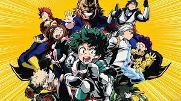

-

Attack on Titan
"That day, the human race remembered the terror of being dominated by them, and the shame of being held captive in a birdcage..." — Over 100 years ago, a natural predator of humanity appeared: the Titans, giant humanoid but mindless monsters whose sole purpose of existence seemed to be to devour humans. There was an insurmountable gap in power between them and mankind, and as a result, humanity was rapidly exterminated to the brink of extinction. The survivors responded by constructing three concentric walls: Wall Maria, Wall Rose and Wall Sina, which graced them with a century of peace. However, one day a Colossal Titan far larger than any other seen before breached the outer wall, allowing the smaller Titans to invade the human territory and forcing the survivors to retreat to the inner walls. Eren Jaeger, a boy whose mother was eaten during the invasion, vowed to wipe every last Titan off the face of the Earth, and joined the military determined to exact his revenge.
-

Deathnote
High school student Light Yagami discovers a supernatural notebook that allows him to kill anyone by writing the victim's name while picturing their face. The story follows his attempts to become a god by creating a New World cleansed of evil by using the notebook, and the complex conflict between himself and all those who try to stop or help him. Death Note is a shounen series created by writer Tsugumi Ohba and artist Takeshi Obata. It began as a manga serialized in Weekly Shounen Jump in 2003, and it has been adapted into a live-action Japanese film series beginning in 2006, an anime series in 2006, a musical in 2015, a live-action television drama in 2015, an American film in 2017, and a German audio drama in 2018. A 37-episode anime television series adaptation, produced by Madhouse and directed by Tetsurō Araki, was broadcast in Japan on Nippon Television from October 2006 to June 2007. A light novel based on the series, written by Nisio Isin, was also released in 2006. Additionally, various video games have been published by Konami for the Nintendo DS. The series was adapted into three live action films released in Japan in June 2006, November 2006, and February 2008, and a television drama in 2015. A miniseries titled Death Note: New Generation and a fourth film were released in 2016. An American film adaptation was released exclusively on Netflix in August 2017 and a sequel is reportedly in the works.
-

FMAB
Brothers Edward and Alphonse Elric are raised by their mother Trisha Elric in the remote village of Resembool in the country of Amestris. Their father Hohenheim, a noted and very gifted alchemist, abandoned his family while the boys were still young, and while in Trisha's care they began to show an affinity for alchemy and became curious about its secrets. However, when Trisha died of a lingering illness, they were cared for by their best friend Winry Rockbell and her grandmother Pinako. The boys traveled the world to advance their alchemic training under Izumi Curtis. Upon returning home, the two decide to try to bring their mother back to life with alchemy. However, human transmutation is a taboo, as it is impossible to do so properly. In the failed transmutation that results in Al's body being completely obliterated, and Ed losing his left leg.
-
 My Hero Academia
People are not born equal, a realization that four-year-old Izuku Midoriya faced when bullied by his classmates who had unique special powers. Izuku was one of the rare cases where he was born with absolutely no unique powers. This did not stop Izuku from pursuing his dream, a dream of becoming a great hero like the legendary All Might. To become the great hero he hopelessly wants to become, he will now join the ranks of one of the highest rated "Hero Academies" in the country: U.A. High School. With the help of his idol All Might, will he be able to claim the ranks and become a true hero?
-

One Piece
The series focuses on Monkey D. Luffy, a young man made of rubber, whom, inspired by his childhood idol, the powerful pirate "Red Haired" Shanks, sets off on a journey from the East Blue Sea to find the mythical treasure, the One Piece, and proclaim himself the King of the Pirates. In an effort to organize his own crew, the Straw Hat Pirates,[Jp 1] Luffy rescues and befriends a pirate hunter and swordsman named Roronoa Zoro, and they head off in search of the titular treasure. They are joined in their journey by Nami, a money-obsessed thief and navigator; Usopp, a sniper and compulsive liar; and Sanji, a perverted but chivalrous chef. They acquire a ship, the Going Merry,[Jp 2] and engage in confrontations with notorious pirates of the East Blue.